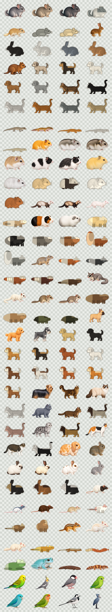

Animals Desktop
A lightweight Windows taskbar pet app with exactly 100 selectable variants across degus, popular dogs and cats, rabbits, rodents, reptiles, amphibians, and other seed-stage animal sprites with ecology-specific motion profiles.

Release Focus
This release prioritizes the small desktop-pet animals that best match the original taskbar-pet feel: chinchillas, macaroni mice / fat-tailed gerbils, hamsters, and geckos. They are available now alongside the degu coats and the expanded 100-variant catalog.
Available Now
- Core pets: degus, chinchillas, macaroni mice / fat-tailed gerbils, rabbits, hamsters, geckos, cats, and dogs.
- More small animals: ferrets, guinea pigs, hedgehogs, squirrels, sugar gliders, fancy rats, fancy mice, gerbils, prairie dogs, chipmunks, and capybaras.
- Wild and low-crawler profiles: foxes, red pandas, otters, tortoises, bearded dragons, crested geckos, corn snakes, and White's tree frogs.
- Popular breed/color additions: French Bulldog fawn, Labrador yellow/black, Golden Retriever golden, Maine Coon brown tabby, Ragdoll seal bicolor, Holland Lop broken orange, and more.
Coming Next
Upcoming ImageGen passes will replace prototype seed art with accepted source-truth motion sets, starting with chinchilla, macaroni mouse, hamster, and gecko families. Momonga / flying squirrel variants and small birds such as sakura buncho, budgerigars, white buncho, cockatiels, lovebirds, and zebra finches are now queued before the broader dog, cat, rabbit, reptile, amphibian, and small-animal passes.
Downloads
Build
- Version
- local
- Date
- local
- Commit
- local